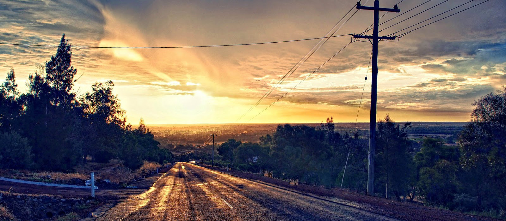
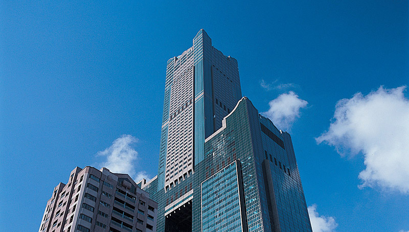

| 夢想與空想 | |
|  | |
|
夢想與空想
有一對兄弟，有一天他們出去爬山回家。他們的家住在八十層樓，他們一人揹著一大包的行李回家。發現大樓停電了。於是哥哥就說：「弟弟，我們一起爬樓梯上去吧。」於是他們就一起爬上去。 到了二十樓的時候，哥哥又告訴弟弟，包包太重了，我們把它放在二十樓，我們爬上去，明天再下來拿。弟弟說好。於是他們就把他們的包包放在二十樓，繼續往上爬。 到了四十樓，弟弟開始抱怨，於是就跟哥哥吵起來了。他們邊吵邊爬，爬到了六十樓，哥哥就對弟弟說，只剩二十層樓了，我們不要吵了，默默的爬完它吧！ 於是他們就各走各的，終於到了家門口。哥哥就擺出了很帥的姿勢：「弟弟開門。」弟弟就對哥哥說，別鬧了，鑰匙不是在你那兒。 結果，他們把鑰匙留在二十樓的包包裡了。 |
|
|
這個故事其實在反映我們的人生。有很多人在二十歲以前是活在家人的期望和老師的期許之下，背負著很多的壓力；在二十歲之後離開了眾人的壓力，開始滿腔的熱血，開始有很多的夢想要完成；可是工作了二十年後，開始發覺工作不如意，於是就開始抱怨老闆、抱怨公司、抱怨社會、抱怨政府。就在這抱怨中又渡過了二十年。
於是告訴自己，六十歲了沒什麼好抱怨的了，就默默的走完自己的餘年吧。到了八十歲快要死掉的前夕，才想起自己好像有什麼事還沒完成。 原來， 「他二十歲的夢想還沒有完成。」 |  |